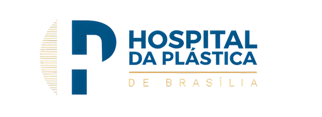

Diagnóstico estratégico e operacional
Investigação ponta a ponta, identificação de oportunidades e priorização por impacto, risco e viabilidade.
Proposta para diagnóstico estratégico e operacional
A TOCCA propõe começar pela clareza: um diagnóstico que mostra onde estão as oportunidades da TUFY e o que fazer com cada uma.
A TOCCA é um studio de estratégia e tecnologia.
Entramos em contextos nos quais a resposta ainda não está definida e conectamos visão de negócio, operação, produto, dados, design e engenharia para transformar problemas complexos em decisões executáveis através de tecnologia.
Atuamos do diagnóstico à implementação.
Investigação ponta a ponta, identificação de oportunidades e priorização por impacto, risco e viabilidade.
Desenho de fluxos, definição de regras, indicadores, responsabilidades e estruturas de acompanhamento.
Jornadas, requisitos, integrações, arquitetura tecnológica, escopo de MVP e protótipos.
Desenvolvimento de plataformas, automações, integrações, inteligência artificial e visão computacional.
Em ambientes regulados, grandes empresas e operações complexas.
Estruturação do produto de corretora as a service, convertendo infraestrutura regulatória e operacional em uma oferta B2B.
Concepção e desenvolvimento de uma plataforma proprietária de investimentos, da visão de produto à implementação.
Automação de processos comerciais e estruturação de indicadores para acompanhamento de metas e gestão de carteira.
Transformação do Wi-Fi gratuito em camarote em um canal de captura de dados e inteligência sobre o público.
Desenho dos processos, automação da operação e implementação do e-commerce para estruturar o negócio digital.
Estruturação da agência digital da Bancorbrás, incluindo proposta de valor, portfólio, fluxos e modelo operacional.
Discovery e implementação de uma solução para conectar empreendedores de comunidades a mentores e patrocinadores, com Shell, Fundação Vale, Fundação Itaú e WhatsApp no conselho.
Concepção de uma jornada educacional em inovação e tecnologia para o programa de trainees da Votorantim.

Escopo contratadoDiagnóstico operacional + desenho do produto + desenvolvimento e implementação da plataforma
Desafio
A jornada entre a indicação cirúrgica e o procedimento estava fragmentada entre documentos, tarefas, responsáveis e cobranças manuais, sem uma visão consolidada da fila.
O que entregamos
no segundo mês após a implementação.
Aproximadamente 100 processos que estavam sem acompanhamento passaram a ser rastreados da indicação à cirurgia.
Escopo contratadoDiagnóstico industrial + business case + arquitetura tecnológica + desenvolvimento de três produtos
Desafio
Perdas relacionadas à arte, decoração, inspeção e paradas de máquina estavam distribuídas em diferentes etapas da operação, sem uma visão consolidada das causas e do impacto financeiro.
O que entregamos
de exposição anual preliminar identificada.
O diagnóstico foi convertido em um portfólio de três produtos, conectando redesenho operacional, desenvolvimento de software e inteligência artificial para atuar sobre diferentes pontos do processo.
A TUFY possui uma operação madura, processos definidos, conhecimento acumulado e capacidade reconhecida de execução. Também identificamos desafios relacionados à aderência das ferramentas, à visualização dos dados e à capacidade de acompanhar determinadas etapas da operação.
Logística, produção e escala de equipes surgiram como pontos iniciais de atenção. Ainda assim, esses temas devem ser tratados como hipóteses, não como uma definição antecipada de priorização.
A própria TUFY trouxe a possibilidade de que o diagnóstico identifique questões que hoje ainda não estão sendo percebidas internamente. Por isso, não propomos começar pela implantação de uma ferramenta. Propomos começar construindo clareza sobre:
01 onde estão as oportunidades mais relevantes;
02 quais delas justificam investimento;
03 o que deve ser resolvido primeiro;
04 qual é o melhor caminho para cada situação.
Um ciclo estruturado para compreender a operação, identificar oportunidades e estabelecer uma ordem clara de decisão.
O diagnóstico não é uma etapa disfarçada de desenvolvimento. Ele possui valor completo e independente, permitindo que a TUFY decida o que fazer, quando fazer e com quem executar.
Objetivos estratégicos, critérios de sucesso e hipóteses iniciais.
Processos, documentos, sistemas, planilhas e históricos.
A operação real, as pessoas, as exceções e as passagens de responsabilidade.
Tempos, volumes, esperas, ocorrências, custos e dependências.
Impacto, risco, esforço, urgência e capacidade de adoção.
O que fazer primeiro, por qual caminho e sob quais condições.
Ao final do diagnóstico, a TUFY receberá:
visão consolidada da operação;
mapa dos principais fluxos e dependências;
linha de base dos processos aprofundados;
oportunidades conectadas às evidências;
quick wins aplicáveis com os recursos atuais;
portfólio priorizado por impacto, risco, esforço e adoção;
business cases preliminares;
comparação entre possíveis caminhos de solução;
roadmap executivo;
recomendação sobre o que deve acontecer em seguida.
A recomendação parte do que a TUFY precisa, não do que a TOCCA pode vender.
O diagnóstico poderá recomendar:
Oportunidades, prioridades, business cases preliminares, roadmap e recomendação executiva.
Detalhamento da oportunidade escolhida, com processo futuro, regras, requisitos, arquitetura, escopo do MVP e protótipo.
Desenvolvimento dimensionado e precificado somente depois da definição do MVP.
A TUFY poderá implementar com a TOCCA, contratar outro parceiro ou conduzir internamente.
Fase 01 · Diagnóstico estratégico e operacional.
Despesas de deslocamento e hospedagem para as atividades presenciais serão apresentadas previamente e custeadas pelo cliente.
Da aprovação ao kickoff, o caminho é curto.
01 Aprovação da proposta
02 Assinatura do contrato
03 Definição da semana presencial
04 Liberação dos documentos e acessos
05 Kickoff executivo
06 Início do diagnóstico
07 Apresentação das conclusões e do roadmap
A primeira conversa indicou alguns caminhos. O diagnóstico existe para encontrar também aqueles que ainda não apareceram.